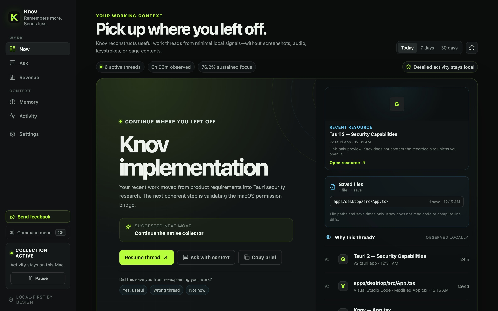
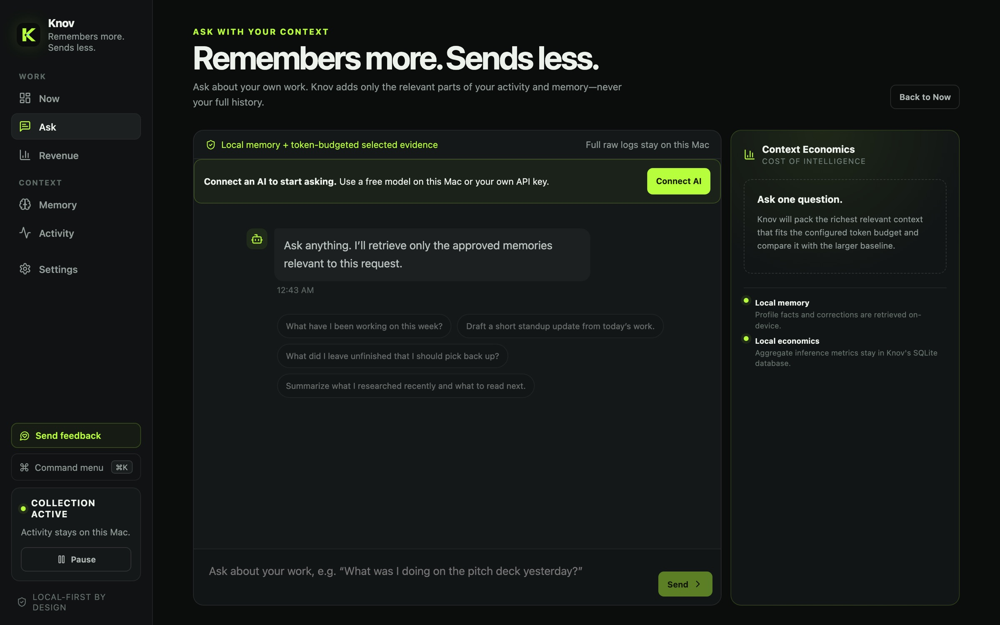
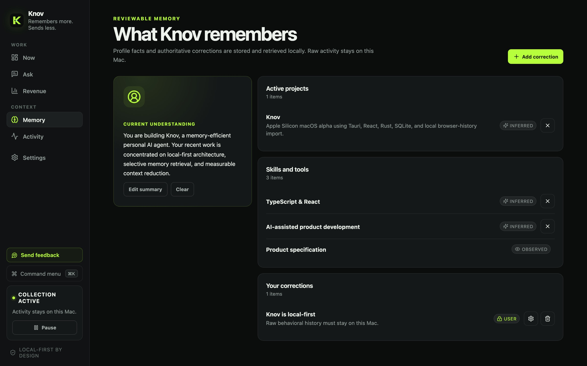

Early access for Mac
Stop re-explaining your work to AI.
Knov quietly notices what you work on across apps and websites, then gives you that context when you need it. Pick up where you left off in one click, and ask AI about your own work. Raw activity never leaves your Mac.
macOS 13 or later · Apple Silicon and Intel

How it works
Work as usual. Knov keeps the thread.
Knov runs in your menu bar. It notes which app is in front, window and page titles, and which files you save. From that it builds work threads you can return to.
- 1
You work
Docs, browser, editor, Slack. Nothing to tag or file.
- 2
Knov groups it
Related apps, pages and files become one thread, like "Q4 pricing proposal".
- 3
You pick it back up
Open Now, click Resume thread, or ask a question with that context attached.
Now
Pick up where you left off
See your active threads, why Knov thinks they belong together, and a suggested next step. Resume thread reopens the pages and files you were using.
- Threads across apps, browsers and editors
- "Why this thread?" shows the evidence
- Copy a brief to paste anywhere
Ask
Ask about your own work
"What have I been working on this week?" "Draft a standup update from today." Knov adds only the relevant parts of your activity and memory to the question, never your full history.
- Use a free model on your Mac, or your own API key
- Works with Ollama, LM Studio, OpenAI, Anthropic and Amazon Bedrock
- See how much context was sent

Memory
You stay in charge of what it knows
Knov keeps a short, readable profile: your projects, skills and focus. Every item is marked as inferred, observed, or yours. Remove anything, add corrections, and your corrections always win.
- Edit the summary in plain language
- Corrections override what Knov guesses
- Stored and retrieved on your Mac

Privacy
Remembers more. Sends less.
Everything Knov records lives in a local database on your Mac. With a local model, nothing leaves the Mac at all.
Knov records
- Which app is in front, and for how long
- Window and page titles
- History from browsers you choose
- Which files you save, by path only
Stays on your Mac
30 days
Raw activity is deleted after 30 days. Pause from the menu bar anytime. Delete everything in Settings erases all data and stored keys.
Goes to your AI
- Local model: nothing leaves the Mac
- Cloud key: a short summary and your question, sent straight to the provider you chose
- No AI: threads and timeline still work
Never recorded
- Keystrokes
- Screenshots
- Page or document contents
- Audio or camera
- Clipboard
Install
Up and running in about 5 minutes
-
Download and install
Download the
Download for Mac.dmg, open it, and drag Knov into Applications. -
Open it once from Settings
This early build isn't notarized by Apple yet. If macOS says it can't verify Knov, click Done, then go to System Settings → Privacy & Security, scroll down, and click Open Anyway. You only do this once.
macOS says the app "is damaged"
Open Terminal, run this command, then open Knov again:
xattr -dr com.apple.quarantine /Applications/Knov.app -
Follow the 4-step setup
Welcome, then Permissions (allow System Events and Accessibility so Knov can see the front app and window titles), then optional Browser history from Chrome, Arc, Brave, Edge or Vivaldi, then AI.
FAQ
Questions
Which Macs does Knov run on?
Macs running macOS 13 (Ventura) or later, with Apple Silicon or Intel. Knov is tested most on Apple Silicon.
Does it work with Safari or Firefox?
History import supports Chrome, Arc, Brave, Edge and Vivaldi. Safari and Firefox history aren't supported yet, but their page titles are still recorded through window titles.
Do I need an AI provider?
No. Threads, Resume thread and the activity timeline work without one. Ask and the profile summary need a local model or an API key.
Does Knov keep running when I close the window?
Yes. It stays in the menu bar. Use the menu bar icon to pause or resume collection, or to quit.
How do I send feedback?
Click Send feedback in the app's sidebar. It opens a message you review before anything is sent. Feedback is never sent automatically.
How do I uninstall?
In Knov, choose Settings → Delete everything to erase your data and stored keys. Quit Knov from the menu bar icon, then drag it from Applications to the Trash.
What are Labs?
Experimental features you can turn on in Settings → Labs: workflow detection, guided workflow interviews, next-step predictions, and a work agent that drafts and opens things only with your approval.
Try Knov this week.
Work as usual for an hour, then open Now and see if it got your day right.
Download for MacmacOS 13 or later · Apple Silicon and Intel